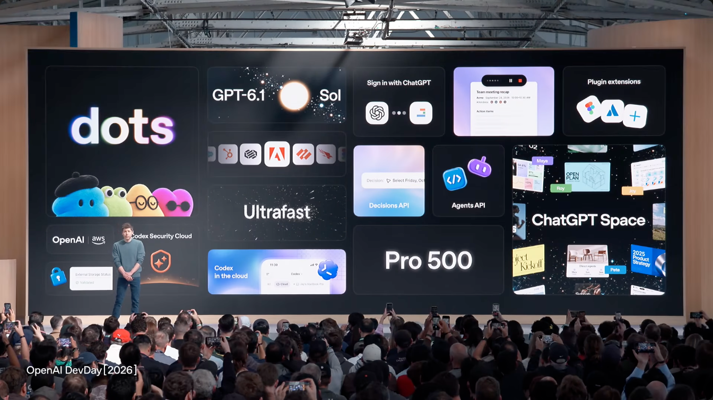
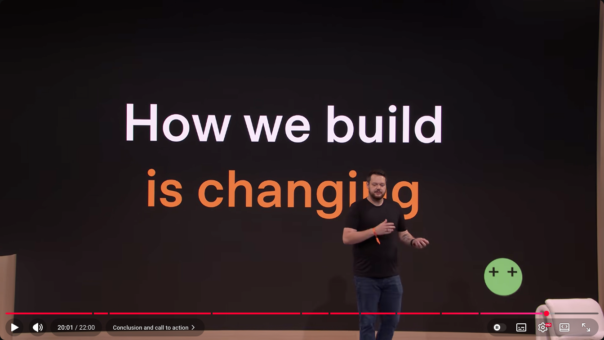
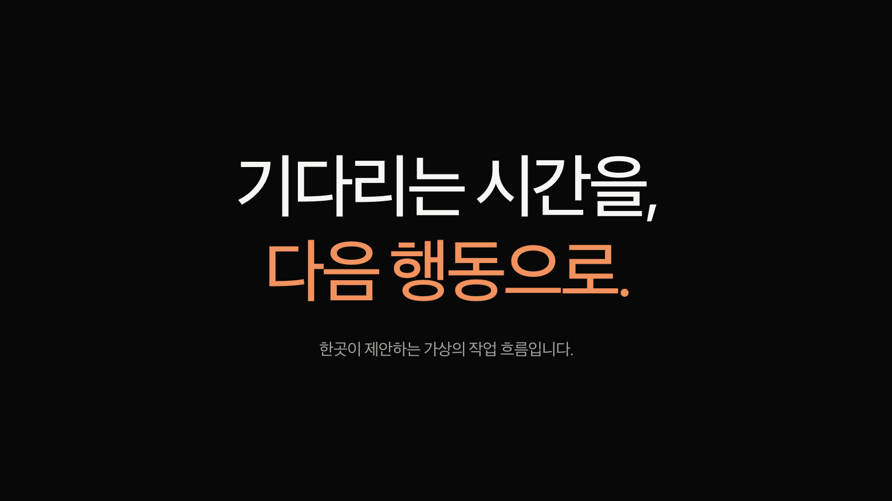

서울신문 · 10월 22일 · 민나리 기자
다수의 아이콘으로 중앙에 메시지를 위한 빈자리를 만듭니다. 현재 양식에는 이 배치를 위한 전용 구성이 없습니다.
수정 전 기록 · 7408175
이 페이지의 “현재”는 변경 전 예제를 뜻합니다. 현장 근거와 실제 수정 결과 비교 ↗
DEV DAY / WHAT WE ACTUALLY APPLIED
사진 6열과 색 라벨, 큰 강조 문장의 원리는 반영됐습니다. 사진의 비중·아이콘의 일관성·다양한 크기의 제품 타일까지 충분히 옮긴 상태는 아닙니다. 세 탐색 에이전트의 재검토와 현재 화면 대조를 모았습니다.
원본 영상 프레임에는 무대·발표자·카메라 원근이 포함됩니다. 원본 슬라이드 파일과 정확한 색상·간격은 확보하지 않았습니다. 아래 비교는 관찰과 우리 구현의 차이를 설명하며 OpenAI의 공식 디자인 규정을 뜻하지 않습니다.
공식 DevDay Exchange 2026 일정에 서울 10월 22일이 명시돼 있습니다. 아래는 서울 현장 보도의 사진을 직접 열어 확인한 자료입니다. 행사 웹페이지나 포토월의 색을 슬라이드 근거로 사용하지 않았습니다.
다수의 아이콘으로 중앙에 메시지를 위한 빈자리를 만듭니다. 현재 양식에는 이 배치를 위한 전용 구성이 없습니다.

폭뿐 아니라 높이와 내용의 밀도도 다릅니다. 현재 고정 2행 콜라주보다 강약이 풍부하고, 밝은 문서 면도 그대로 살아 있습니다.

색은 수치의 두 의미를 구분합니다. 현재 단일 수치 양식과 일반 두 열 목록만으로는 이 큰 수치의 대비를 충분히 표현하지 못합니다.
이 사진들은 일부 발표 화면의 근거입니다. 행사 전체의 장별 순서·전환·컬러 빈도나 발표 파일을 확인한 것은 아닙니다. 사진의 수치·제품명은 연구 자료이며 우리 가상 예제의 성과로 사용하지 않습니다.
반영한 것사진 6장의 동일한 프레임, 상하 정렬, 일정 간격, 풀컬러 이미지와 사진 위의 라벨입니다.
남은 차이큰 전체 제목과 하단 설명이 추가돼 사진 높이는 캔버스의 54.5%, 사진 면적 합은 44.8%입니다. 첫 사진은 휴대폰이 잘려 ‘기록’이라는 행동이 보이지 않습니다. 원본의 둥근 모서리와 한 시리즈 같은 이미지 선택도 충분히 반영되지 않았습니다.
현재 비율은 브라우저 DOM에서 측정했습니다. 원본은 카메라 원근이 있는 영상으로 관찰했으며 같은 정밀도로 수치를 측정한 것이 아닙니다.
반영한 것어두운 바탕, 수평 등간격, 원 안의 어두운 심벌, 원과 라벨의 의미색 연결입니다.
남은 차이원본은 범주의 뜻을 바로 읽을 수 있는 일관된 선형 그림입니다. 현재는 ◉ ↔ ✳ ↗ 문자열을 사용해 선 굵기·광학 크기가 통일되지 않습니다. 제목의 정렬과 위치도 다르며, 원본에는 흰색 범주도 있습니다.


원본에서 보이는 구성사진·앱·문자·수치·로고가 서로 다른 크기와 높이를 갖고 공통 모서리와 간격으로 묶입니다. 서울 현장 자료에서도 이 구성을 확인했습니다.
현재 양식의 한계4열×2행에 가로 폭만 1칸 또는 2칸으로 바꾸는 양식입니다. 높이를 가로지르는 타일이나 중앙 메시지를 둘러싼 아이콘 배열은 표현하지 못합니다.


색을 작은 장식에 반복하기보다 한 의미 단위 전체에 주는 방식은 반영됐습니다. 정확한 글꼴·색상값을 재현했다는 의미는 아닙니다. 보라색 이름 소개를 워크숍 문장에 적용한 것은 우리 템플릿의 확장입니다.
주장 옆 2×2 결과물은 DevDay 직접 참고입니다. 노랑 라벨의 사진 조건 비교는 Apple, 현재 고정 6칸 작품 배열의 구체적인 비율은 Figma 제품 데모에서 참고했습니다. DevDay와 서울에도 더 복잡한 혼합 타일이 존재하므로 콜라주 전체를 Figma만의 방식으로 단정하지 않습니다.